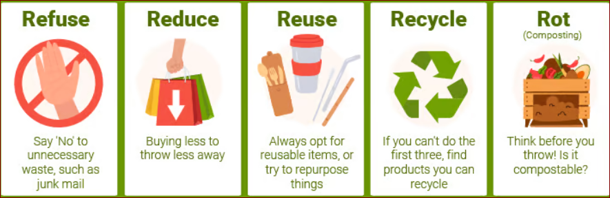

5 Easy Ways to Reduce E-Waste
Tips for Sustainable Living

E-waste is one of the fastest-growing waste problems worldwide,
but you can take simple steps to minimize it. Here are five easy ways
to reduce e-waste and contribute to a greener planet:
- Extend the Life of Your Devices:
- Take care of your gadgets by using protective cases and handling them properly.
- Regularly clean and maintain your devices to avoid premature breakdowns.
- Keep your software updated to ensure smooth performance and longevity.
- Repair Instead of Replace:
- Before replacing a broken gadget, consider getting it repaired.
- Many minor issues can be fixed with simple DIY solutions or by visiting a repair shop.
- Check manufacturer support for extended warranties or repair services.
- Donate or Sell Old Electronics:
- If your devices are still functional but no longer needed, donate them to someone in need.
- Sell used electronics through online marketplaces or trade-in programs.
- Many organizations refurbish old gadgets and provide them to underprivileged communities.
- Recycle Responsibly:
- Find certified e-waste recycling centers in your area and drop off old electronics.
- Never throw electronic devices in regular trash as they contain hazardous materials.
- Some manufacturers and retailers offer take-back programs for proper recycling.
- Buy Sustainably:
- Choose eco-friendly brands that design recyclable and long-lasting products.
- Avoid unnecessary upgrades—consider whether a new device is truly needed.
- Support companies with responsible e-waste management and sustainability initiatives.